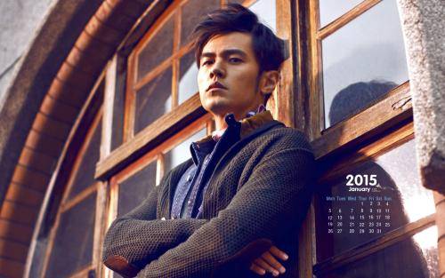
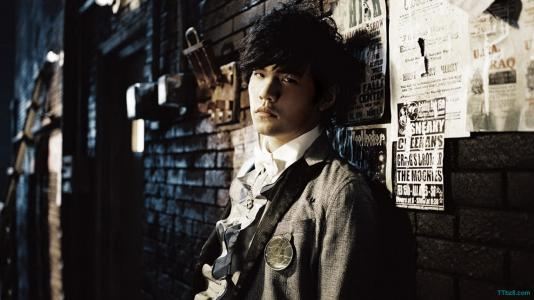
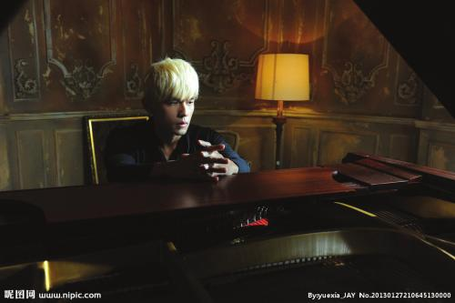

周杰伦
- 姓名：周杰伦
- 英语名：Jay Chou
- 生日：1979年1月18日
- 简介：台湾著名华语流行歌曲男歌手、音乐家、唱片制片人。同时是演员、导演，也是电竞团队队长兼老板、服饰品牌老板。以其个人风格和音乐创作能力著称，影响华语乐坛。
重要事件
-
2000年，周杰伦发行了他的首张专辑《Jay》
-
2003年，他是《时代》杂志（亚洲版）的封面故事，被称为“亚洲流行音乐的新天王”。
-
2005年，周杰伦在电影《头文字D》中开始了他的电影事业
-
2011年首度进入好莱坞，饰演《青蜂侠》里的助理Kato
- 2016年，在电影《惊天魔盗团2》中扮演小李。
成就和荣誉
- 第一张专辑《Jay》就获得最佳专辑，同时也入围当年最佳制作人、最佳作曲人和最佳新人奖三项大奖。同年，获得新加坡金曲奖最佳新人奖。
- 第二张专辑《范特西》获得包括最佳专辑、最佳编曲等在内的五个金曲奖奖项。
- 第四张专辑《叶惠美》获得最佳专辑、最佳音乐视频导演奖
- 随后连续三年金曲奖角逐的失败使周杰伦心灰意冷，而后连续两年以《青花瓷》和《稻香》二曲分别拿下两届金曲奖年度最佳歌曲奖
- 周杰伦于第20届和第22届金曲奖以《魔杰座》和《跨时代》两张专辑拿下最佳国语男歌手等奖项。
- 周杰伦于2002年至2006年曾连续5年获得香港IFPI最佳销量国语唱片奖。
- 周杰伦获得香港叱咤乐坛流行榜颁奖典礼我最喜爱的歌曲大奖的台湾歌手
- 周杰伦于2001年以《开不了口》得奖，同时他亦是继周华健后第二位获得叱咤乐坛唱作人大奖的台湾歌手。
- 周杰伦出道7年，在十大中文金曲中只有2005年没得到全国最受欢迎中文歌曲奖项。
- 周杰伦出道以来，发行的其中四张专辑（分别为《Jay》、《范特西》、《叶惠美》和《跨时代》）曾拿下金曲奖最佳国语专辑奖。
- 周杰伦分别于2004年、2006年、2007年、2008年，共四次获得世界音乐大奖“亚洲最高销量艺人”奖。
主要作品
| 年份 |
专辑名称 |
| 2001年 | 范特西 | >
| 2002年 | 八度空间 |
| 2003年 | 叶惠美 |
| 2004年 | 七里香 |
| 2005年 | 11月的肖邦 |
| 2006年 | 依然范特西 |
| 2007年 | 我很忙 |
| 2008年 | 魔杰座 |
| 2010年 | 跨时代 |
| 2011年 | 惊叹号 |
| 2012年 | 12新作 |
| 2014年 | 哎呦，不错哦 |
| 2016年 | 周杰伦的床边故事 |
生活照



生平
周杰伦在台湾台北林口长大。父亲周耀中，当时任教于台北县芦洲国中，教授生物；母亲叶惠美则是林口国中美术教师。14岁时父母离异，由父亲担任监护人，年满18岁后选择与母亲共同生活，周杰伦在台湾民视新闻台由胡婉玲主持的节目《台湾演义》专访中，澄清《爸，我回来了》的灵感，只是对社会上家暴现象的感慨，并非指涉父母间的状况，父亲方面的亲戚也曾质疑过他，他还为此向亲戚们澄清，为此误解抱歉过。